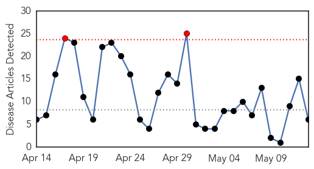
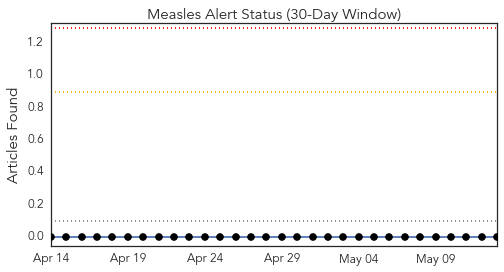
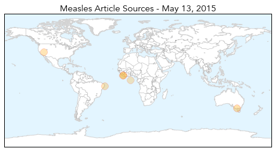
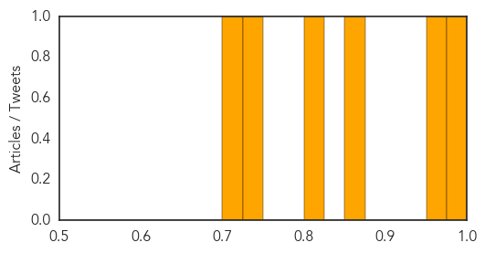

Hemmorhagic Fever
30-Day Web Trend
3 alerts, 0 warnings

30-Day Twitter Trend
0 alerts, 0 warnings

Article Locations

Article Confidences

Top Articles:
-
No articles found for May 13, 2015
Top Tweets:
-
No tweets found for May 13, 2015
Measles
30-Day Web Trend
2 alerts, 0 warnings

30-Day Twitter Trend
0 alerts, 0 warnings

Article Locations
Article Confidences
Top Articles:
- 0.994
- Measles Outbreak: Another Danger Lurking for Liberia
- 0.962
- Quarantine hoped to prevent measles spread
- 0.855
- Measles immunization coverage rates increase in the Silver State
- 0.800
- Ceará Public Health System in Crisis with Patients Treated on the Floor
- 0.733
- Children being immunized Against the Fatal Measles Disease
- 0.725
- School official District prepared for possible measles outbreak
Top Tweets:
-
No tweets found for May 13, 2015